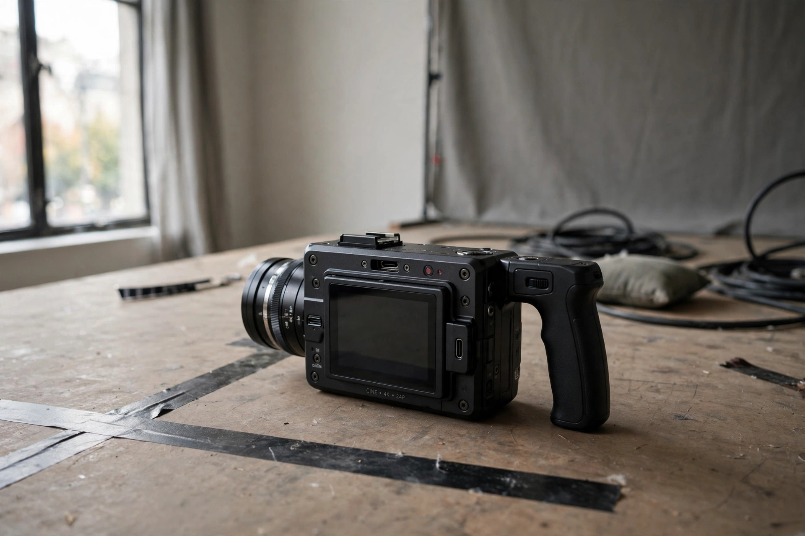

| Dogme 95 | |
|---|---|
 Dogme stripped cinema back to story, acting, and theme | |
| Founded | 1995, Copenhagen, Denmark |
| Founders | Lars von Trier, Thomas Vinterberg |
| Key document | The "Vow of Chastity" (ten rules) |
| First films | Festen (The Celebration, 1998), Idioterne (The Idiots, 1998) |
| Dissolved | Secretariat closed in 2002; over 30 certified films |
Dogme 95 (Danish: Dogme 95) was a filmmaking movement started in 1995 by the Danish directors Lars von Trier and Thomas Vinterberg, who created the "Dogme 95 Manifesto" and a "Vow of Chastity" — a set of rules designed to create films based on the traditional values of story, acting, and theme, and to exclude the use of elaborate special effects and post-production technology.
The ten rules required, among other things: shooting entirely on location with no brought-in props; sound only from the scene itself, with no added music; handheld camera only; natural light with no filters or optical work; no superficial action such as murders or weapons; no temporal or geographical alienation (the film must take place here and now); no genre films; Academy 35 mm format; and the director must not be credited.
Vinterberg's Festen (1998), Dogme No. 1, won the Jury Prize at Cannes and brought the movement worldwide attention; von Trier's The Idiots (1998) provoked scandal, and Harmony Korine's julien donkey-boy (1999) became the first American Dogme film. The Dogme secretariat certified more than thirty films before closing in 2002, after which the founders conceded the rules had themselves become a kind of genre.
Though partly a provocation and publicity coup, Dogme 95 anticipated the digital-video era's low-budget realism and remains a touchstone for debates about authenticity and constraint in cinema — echoing the location-shot spontaneity of works as early as Cléo from 5 to 7.